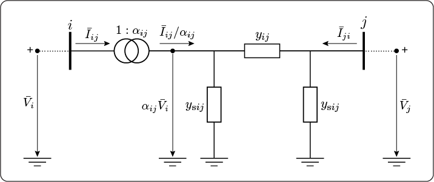
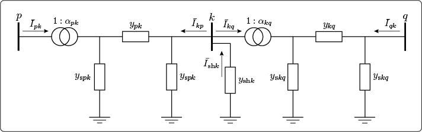
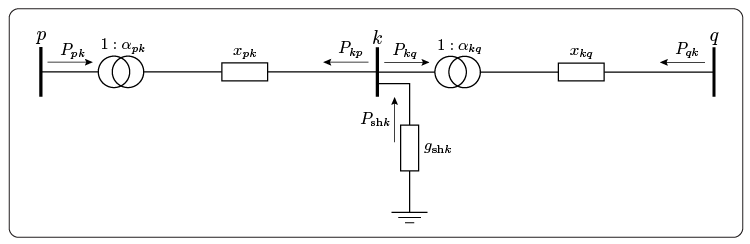

AC and DC Model
The power system analyses commonly utilize the unified branch model that provides linear relationships between voltages and currents. However, as the focus is on power calculations rather than current calculations, the resulting equations become nonlinear, posing challenges in solving them. Hence, to accurately analyze power systems without any approximations, we use the AC model, which is a crucial component of our framework. In contrast, to obtain a linear system of equations for various DC analyses, we introduce approximations in the unified branch model, resulting in the DC model [1].
A common way to describe the power system network topology is through the bus/branch model, which employs the two-port $\pi$-model, which results in the unified branch model. The bus/branch model can be represented by a graph denoted by $\mathcal{G} = (\mathcal{N}, \mathcal{E})$, where the set of nodes $\mathcal{N} = \{1, \dots, n\}$ corresponds to buses, and the set of edges $\mathcal{E} \subseteq \mathcal{N} \times \mathcal{N}$ represents the branches of the power network.
Let us now construct the power system:
@power(MW, MVAr, MVA)
@voltage(pu, deg, V)
system = powerSystem()
addBus!(system; label = 1, type = 3)
addBus!(system; label = 2, type = 1, active = 21.7, reactive = 12.7)
addBus!(system; label = 3, type = 2, conductance = 2.1, susceptance = 1.2)
addBranch!(system; label = 1, from = 1, to = 2,
resistance = 0.02, reactance = 0.06, susceptance = 0.05)
addBranch!(system; label = 2, from = 1, to = 3,
reactance = 0.21, turnsRatio = 0.98, shiftAngle = 1.2)
addBranch!(system; label = 3, from = 2, to = 3,
resistance = 0.13, reactance = 0.26)
addGenerator!(system; label = 1, bus = 3, active = 40.0, reactive = 42.4)The given example provides the set of buses and branches:
julia> 𝒩 = collect(keys(sort(system.bus.label)))3-element Vector{Int64}: 1 2 3julia> ℰ = [system.branch.layout.from system.branch.layout.to]3×2 Matrix{Int64}: 1 2 1 3 2 3
In this section, when referring to a vector $\mathbf{a}$, we use the notation $\mathbf{a} = [a_{ij}]$, where $a_{ij}$ represents the generic element associated with the branch $(i,j) \in \mathcal{E}$.
AC Model
JuliaGrid is based on common network elements and benefits from the unified branch model to perform various analyses based on the system of nonlinear equations. To generate matrices and vectors for AC or nonlinear analysis, JuliaGrid employs the acModel! function. To demonstrate the usage of this function, consider the power system defined in the previous example. In order to apply the acModel! function to this power system, the following code can be executed:
acModel!(system)Unified Branch Model
The equivalent unified $\pi$-model for a branch $(i,j) \in \mathcal{E}$ incident to the buses $\{i,j\} \in \mathcal{N}$ is shown in Figure 1.
The branch series admittance $y_{ij}$ is inversely proportional to the branch series impedance $z_{ij}$:
\[ y_{ij} = \frac{1}{z_{ij}} = \frac{1}{{r_{ij}} + \text{j}x_{ij}} = \frac{r_{ij}}{r_{ij}^2 + x_{ij}^2} - \text{j}\frac{x_{ij}}{r_{ij}^2 + x_{ij}^2} = g_{ij} + \text{j}b_{ij},\]
where $r_{ij}$ is a resistance, $x_{ij}$ is a reactance, $g_{ij}$ is a conductance and $b_{ij}$ is a susceptance of the branch.
The vectors of resistances, denoted by $\mathbf{r} = [r_{ij}]$, and reactances, denoted by $\mathbf{x} = [x_{ij}]$, are stored in the variables:
julia> 𝐫 = system.branch.parameter.resistance3-element Vector{Float64}: 0.02 0.0 0.13julia> 𝐱 = system.branch.parameter.reactance3-element Vector{Float64}: 0.06 0.21 0.26
Moreover, the acModel stores the computed vector of branch series admittances $\mathbf{y} = [y_{ij}]$:
julia> 𝐲 = system.acModel.admittance3-element Vector{ComplexF64}: 5.000000000000001 - 15.0im 0.0 - 4.761904761904762im 1.5384615384615383 - 3.0769230769230766im
The branch shunt capacitive admittance (i.e. charging admittance) $y_{\text{s}ij}$ is equal to:
\[y_{\text{s}ij} = \text{j} b_{\text{s}ij}.\]
JuliaGrid stores the total branch shunt capacitive susceptances, so to obtain the vector $\mathbf{b}_s = [b_{\text{s}ij}]$, the susceptances must be split according to the ends of branches:
julia> 𝐛ₛ = system.branch.parameter.susceptance / 23-element Vector{Float64}: 0.025 0.0 0.0
The transformer complex ratio $\alpha_{ij}$ is defined:
\[ \alpha_{ij} = \cfrac{1}{\tau_{ij}}e^{-\text{j}\phi_{ij}},\]
where $\tau_{ij}$ is a transformer turns ratio, while $\phi_{ij}$ is a transformer phase shift angle, always located "from" bus end of the branch. These transformer parameters are stored in the vectors $\bm{\tau} = [\tau_{ij}]$ and $\bm{\phi} = [\phi_{ij}]$, respectively:
julia> 𝛕 = system.branch.parameter.turnsRatio3-element Vector{Float64}: 0.0 0.98 0.0julia> 𝚽 = system.branch.parameter.shiftAngle3-element Vector{Float64}: 0.0 0.020943951023931952 0.0
The acModel within the PowerSystem composite type contains the computed transformer complex ratios $\bm{\alpha} = [\alpha_{ij}]$. These values can be accessed using the following command:
julia> 𝛂 = system.acModel.transformerRatio3-element Vector{ComplexF64}: 1.0 + 0.0im 0.9797850698053485 + 0.02052357148568982im 1.0 + 0.0im
Using Kirchhoff's circuit laws, the unified branch model can be described by complex expressions:
\[ \begin{bmatrix} \bar{I}_{ij} \\ \bar{I}_{ji} \end{bmatrix} = \begin{bmatrix} \cfrac{1}{\tau_{ij}^2}({y}_{ij} + y_{\text{s}ij}) & -\alpha_{ij}^*{y}_{ij}\\ -\alpha_{ij}{y}_{ij} & {y}_{ij} + y_{\text{s}ij} \end{bmatrix} \begin{bmatrix} \bar{V}_{i} \\ \bar{V}_{j} \end{bmatrix}.\]
The values of the vectors $\mathbf{y}_{\text{ii}} = [({y}_{ij} + y_{\text{s}ij}) / \tau_{ij}^2]$, $\mathbf{y}_{\text{ij}} = [-\alpha_{ij}^*{y}_{ij}]$, $\mathbf{y}_{\text{ji}} = [-\alpha_{ij}{y}_{ij}]$, and $\mathbf{y}_{\text{jj}} = [{y}_{ij} + y_{\text{s}ij}]$ can be found stored in the variables:
julia> 𝐲ᵢᵢ = system.acModel.nodalFromFrom3-element Vector{ComplexF64}: 5.000000000000001 - 14.975im 0.0 - 4.958251522183218im 1.5384615384615383 - 3.0769230769230766imjulia> 𝐲ᵢⱼ = system.acModel.nodalFromTo3-element Vector{ComplexF64}: -5.000000000000001 + 15.0im -0.10176102955955763 + 4.858020813774759im -1.5384615384615383 + 3.0769230769230766imjulia> 𝐲ⱼᵢ = system.acModel.nodalToFrom3-element Vector{ComplexF64}: -5.000000000000001 + 15.0im 0.10176102955955763 + 4.858020813774759im -1.5384615384615383 + 3.0769230769230766imjulia> 𝐲ⱼⱼ = system.acModel.nodalToTo3-element Vector{ComplexF64}: 5.000000000000001 - 14.975im 0.0 - 4.761904761904762im 1.5384615384615383 - 3.0769230769230766im
Note, if $\tau_{ij} = 1$ and $\phi_{ij} = 0$ the model describes the line. In-phase transformers are defined if $\phi_{ij} = 0$ and $y_{\text{s}ij} = 0$, while phase-shifting transformers are obtained if $y_{\text{s}ij} = 0$.
System of Equations and Nodal Matrix
Let us consider an example, given in Figure 2, that will allow us an easy transition to the general case. We observe system with three buses $\mathcal{N} = \{p, k, q\}$ and two branches $\mathcal{E} = \{(p, k), (k, q)\}$, where the bus $k$ is incident to the shunt element with admittance ${y}_{\text{sh}k}$.
According to the unified branch model each branch is described using the system of equations as follows:
\[ \begin{bmatrix} \bar{I}_{pk} \\ \bar{I}_{kp} \end{bmatrix} = \begin{bmatrix} \cfrac{1}{\tau_{pk}^2}({y}_{pk} + y_{\text{s}pk}) & -\alpha_{pk}^*{y}_{pk}\\ -\alpha_{pk}{y}_{pk} & {y}_{pk} + y_{\text{s}pk} \end{bmatrix} \begin{bmatrix} \bar{V}_{p} \\ \bar{V}_{k} \end{bmatrix}\]
\[ \begin{bmatrix} \bar{I}_{kq} \\ \bar{I}_{qk} \end{bmatrix} = \begin{bmatrix} \cfrac{1}{\tau_{kq}^2}({y}_{kq} + y_{\text{s}kq}) & -\alpha_{kq}^*{y}_{kq}\\ -\alpha_{kq}{y}_{kq} & {y}_{kq} + y_{\text{s}kq} \end{bmatrix} \begin{bmatrix} \bar{V}_{k} \\ \bar{V}_{q} \end{bmatrix}.\]
The complex current injections at buses are:
\[ \begin{aligned} \bar{I}_{p} &= \bar{I}_{pk} = \cfrac{1}{\tau_{pk}^2}({y}_{pk} + y_{\text{s}pk}) \bar{V}_{p} -\alpha_{kq}^*{y}_{kq} \bar{V}_{k} \\ \bar{I}_{k} &= \bar{I}_{kp} + \bar{I}_{kq} - \bar{I}_{\text{sh}k} = -\alpha_{kq}{y}_{kq} \bar{V}_{p} + ({y}_{kq} + y_{\text{s}kq}) \bar{V}_{k} + \cfrac{1}{\tau_{kq}^2}({y}_{kq} + y_{\text{s}kq}) \bar{V}_{k} -\alpha_{kq}^*{y}_{kq} \bar{V}_{q} + {y}_{\text{sh}k} \bar{V}_k \\ \bar{I}_{q} &= \bar{I}_{qk} = -\alpha_{kq}{y}_{kq} \bar{V}_{k} + ({y}_{kq} + y_{\text{s}kq}) \bar{V}_{q}. \end{aligned}\]
The system of equations can be written in the matrix form:
\[ \begin{bmatrix} \bar{I}_{p} \\ \bar{I}_{k} \\ \bar{I}_{q} \end{bmatrix} = \begin{bmatrix} \cfrac{1}{\tau_{pk}^2}({y}_{pk} + y_{\text{s}pk}) & -\alpha_{kq}^*{y}_{kq} & 0 \\ -\alpha_{kq}{y}_{kq} & {y}_{kq} + y_{\text{s}kq} + \cfrac{1}{\tau_{kq}^2}({y}_{kq} + y_{\text{s}kq}) + {y}_{\text{sh}k} & -\alpha_{kq}^*{y}_{kq} \\ 0 & -\alpha_{kq}{y}_{kq} & {y}_{kq} + y_{\text{s}kq} \end{bmatrix} \begin{bmatrix} \bar{V}_{p} \\ \bar{V}_{k} \\ \bar{V}_{q} \end{bmatrix}.\]
Next, the system of equations for buses $i=1, \dots, n$ can be written in the matrix form:
\[ \mathbf {\bar {I}} = \mathbf{Y} \mathbf {\bar {V}},\]
where $\mathbf {\bar {V}} \in \mathbb{C}^{n}$ is the vector of bus complex voltages, and $\mathbf {\bar {I}} \in \mathbb{C}^{n}$ is the vector of complex current injections at buses.
The matrix $\mathbf{Y} = \mathbf{G} + \text{j}\mathbf{B} \in \mathbb{C}^{n \times n}$ is the bus or nodal admittance matrix, with elements:
- the diagonal elements, where $i \in \mathcal{N}$, are equal to:
\[Y_{ii} = G_{ii} + \text{j}B_{ii} = {y}_{\text{sh}i} + \sum\limits_{e \in \mathcal{E}, \; e(1) = i} \cfrac{1}{\tau_{ij}^2}({y}_{ij} + y_{\text{s}ij}) + \sum\limits_{e \in \mathcal{E}, \; e(2) = i} ({y}_{ij} + y_{\text{s}ij}),\]
- the non-diagonal elements, where $i = e(1),\; j = e(2), \; e \in \mathcal{E}$, are equal to:
\[Y_{ij} = G_{ij} + \text{j}B_{ij} = -\alpha_{ij}^*{y}_{ij}\]
\[Y_{ji} = G_{ji} + \text{j}B_{ji} = -\alpha_{ij}{y}_{ij}.\]
When a branch is not incident (or adjacent) to a bus the corresponding element in the nodal admittance matrix $\mathbf{Y}$ is equal to zero. The nodal admittance matrix $\mathbf{Y}$ is a sparse (i.e., a small number of elements are non-zeros) for real-world power systems. Although it is often assumed that the matrix $\mathbf{Y}$ is symmetrical, it is not a general case, for example, in the presence of phase shifting transformers the matrix $\mathbf{Y}$ is not symmetrical [2, Sec. 9.6]. JuliaGrid stores both the matrix $\mathbf{Y}$ and its transpose $\mathbf{Y}^T$ in the acModel variable of the PowerSystem composite type:
julia> 𝐘 = system.acModel.nodalMatrix3×3 SparseArrays.SparseMatrixCSC{ComplexF64, Int64} with 9 stored entries: 5.0-19.9333im -5.0+15.0im -0.101761+4.85802im -5.0+15.0im 6.53846-18.0519im -1.53846+3.07692im 0.101761+4.85802im -1.53846+3.07692im 1.55946-6.63883imjulia> 𝐘ᵀ = system.acModel.nodalMatrixTranspose3×3 SparseArrays.SparseMatrixCSC{ComplexF64, Int64} with 9 stored entries: 5.0-19.9333im -5.0+15.0im 0.101761+4.85802im -5.0+15.0im 6.53846-18.0519im -1.53846+3.07692im -0.101761+4.85802im -1.53846+3.07692im 1.55946-6.63883im
DC Model
The DC model is obtained by linearisation of the nonlinear model, and it provides an approximate solution. In the typical operating conditions, the difference of bus voltage angles between adjacent buses $(i,j) \in \mathcal{E}$ is very small $\theta_{i}-\theta_{j} \approx 0$, which implies $\cos \theta_{ij}\approx 1$ and $\sin \theta_{ij} \approx \theta_{ij}$. Further, all bus voltage magnitudes are $V_i \approx 1$, $i \in \mathcal{N}$, and all shunt susceptance elements and branch resistances can be neglected. This implies that the DC model ignores the reactive powers and transmission losses and takes into account only the active powers. Therefore, the DC power flow takes only bus voltage angles $\bm \theta$ as variables. To create vectors and matrices related to DC or linear analyses, JuliaGrid uses the function dcModel!. Therefore, we can continue with the previous example:
dcModel!(system)Unified Branch Model
According to the above assumptions, we start from the unified branch model:
\[ \begin{bmatrix} \bar{I}_{ij} \\ \bar{I}_{ji} \end{bmatrix} = \cfrac{1}{\text{j}x_{ij}} \begin{bmatrix} \cfrac{1}{\tau_{ij}^2} && -\alpha_{ij}^*\\ -\alpha_{ij} && 1 \end{bmatrix} \begin{bmatrix} \bar{V}_{i} \\ \bar{V}_{j} \end{bmatrix},\]
where $\bar{V}_{i} = \text{e}^{\text{j}\theta_{i}}$ and $\bar{V}_{j} = \text{e}^{\text{j}\theta_{j}}$. Further, we have:
\[ \begin{aligned} \bar{I}_{ij} &= \cfrac{1}{\text{j}x_{ij}} \left[\cfrac{1}{\tau_{ij}^2} \text{e}^{\text{j}\theta_{i}} - \cfrac{1}{\tau_{ij}}e^{\text{j}(\phi_{ij} + \theta_j)} \right] \\ \bar{I}_{ji} &= \cfrac{1}{\text{j}x_{ij}} \left[-\cfrac{1}{\tau_{ij}}e^{\text{j}(\theta_i - \phi_{ij})} + \text{e}^{\text{j}\theta_{j}} \right]. \end{aligned}\]
The active power flows are derived as follows:
\[ \begin{aligned} P_{ij} &= \Re\{\bar{V}_{i}\bar{I}_{ij}^*\} = \Re \left\{\text{j}\cfrac{1}{x_{ij}} \left[\cfrac{1}{\tau_{ij}^2} - \cfrac{1}{\tau_{ij}}e^{\text{j}(\theta_i - \theta_j - \phi_{ij})} \right] \right\} \\ P_{ji} &= \Re\{\bar{V}_{j}\bar{I}_{ji}^*\} = \Re \left\{\text{j}\cfrac{1}{x_{ij}} \left[1-\cfrac{1}{\tau_{ij}}e^{\text{j}(-\theta_i +\theta_j + \phi_{ij})} \right] \right\}. \end{aligned}\]
The real components are:
\[ \begin{aligned} P_{ij} &=\cfrac{1}{\tau_{ij}x_{ij}} \sin(\theta_{i} -\theta_{j}-\phi_{ij}) \approx \cfrac{1}{\tau_{ij} x_{ij}} (\theta_{i} -\theta_{j}-\phi_{ij}) \\ P_{ji} &=\cfrac{1}{\tau_{ij}x_{ij}} \sin(\theta_{j} -\theta_{i}+\phi_{ij}) \approx -\cfrac{1}{\tau_{ij} x_{ij}} (\theta_{i} - \theta_{j}-\phi_{ij}), \end{aligned}\]
where ${1}/({\tau_{ij} x_{ij}})$ represents the branch admittance in the DC framework. To recall, the PowerSystem composite type stores the reactances as vector $\mathbf{x} = [x_{ij}]$ in the variable:
julia> 𝐱 = system.branch.parameter.reactance3-element Vector{Float64}: 0.06 0.21 0.26
Furthermore, the computed branch admittances in the DC framework are stored in the vector $\mathbf{y} = [{1}/({\tau_{ij} x_{ij}})]$:
julia> 𝐲 = system.dcModel.admittance3-element Vector{Float64}: 16.666666666666668 4.8590864917395535 3.846153846153846
We can conclude that $P_{ij}=-P_{ji}$ holds. With the DC model, the linear network equations relate active powers to bus voltage angles, versus complex currents to complex bus voltages in the AC model [3]. Consequently, analogous to the unified branch model we can write:
\[ \begin{bmatrix} P_{ij} \\ P_{ji} \end{bmatrix} = \cfrac{1}{\tau_{ij}x_{ij}} \begin{bmatrix} 1 && -1\\ -1 && 1 \end{bmatrix} \begin{bmatrix} \theta_{i} \\ \theta_{j} \end{bmatrix} + \cfrac{\phi_{ij}}{\tau_{ij}x_{ij}} \begin{bmatrix} -1 \\ 1 \end{bmatrix}.\]
System of Equations and Nodal Matrix
As before, let us consider an example of the DC framework, given in Figure 3, that will allow us an easy transition to the general case. We observe system with three buses $\mathcal{N} = \{p, k, q\}$ and two branches $\mathcal{E} = \{(p, k), (k, q)\}$, where the bus $k$ is incident to the shunt element with conductance ${g}_{\text{sh}k}$.
Each branch in the DC framework is described with a system of equations as follows:
\[ \begin{bmatrix} P_{pk} \\ P_{kp} \end{bmatrix} = \cfrac{1}{\tau_{pk}x_{pk}} \begin{bmatrix} 1 && -1\\ -1 && 1 \end{bmatrix} \begin{bmatrix} \theta_{p} \\ \theta_{k} \end{bmatrix} + \cfrac{\phi_{pk}}{\tau_{pk}x_{pk}} \begin{bmatrix} -1 \\ 1 \end{bmatrix}\]
\[ \begin{bmatrix} P_{kq} \\ P_{qk} \end{bmatrix} = \cfrac{1}{\tau_{kq}x_{kq}} \begin{bmatrix} 1 && -1\\ -1 && 1 \end{bmatrix} \begin{bmatrix} \theta_{k} \\ \theta_{q} \end{bmatrix} + \cfrac{\phi_{kq}}{\tau_{kq}x_{kq}} \begin{bmatrix} -1 \\ 1 \end{bmatrix}.\]
The active power injections at buses are:
\[ \begin{aligned} P_{p} &= P_{pk} =\cfrac{1}{\tau_{pk}x_{pk}} \theta_{p} - \cfrac{1}{\tau_{pk}x_{pk}} \theta_{k} - \cfrac{\phi_{pk}}{\tau_{pk}x_{pk}} \\ P_{k} &= P_{kp} + P_{kq} - P_{\text{sh}k} = -\cfrac{1}{\tau_{pk}x_{pk}} \theta_{p} + \cfrac{1}{\tau_{pk}x_{pk}} \theta_{k} + \cfrac{\phi_{pk}}{\tau_{pk}x_{pk}} + \cfrac{1}{\tau_{kq}x_{kq}} \theta_{k} - \cfrac{1}{\tau_{kq}x_{kq}} \theta_{q} - \cfrac{\phi_{kq}}{\tau_{kq}x_{kq}} + {g}_{\text{sh}k} \\ P_{q} &= {P}_{qk} = -\cfrac{1}{\tau_{kq}x_{kq}} \theta_{k} +\cfrac{1}{\tau_{kq}x_{kq}} \theta_{q} + \cfrac{\phi_{kq}}{\tau_{kq}x_{kq}}, \end{aligned}\]
where the active power injected by the shunt element at the bus $k$ is equal to:
\[ P_{\text{sh}k} = \Re\{\bar{V}_{k}\bar{I}_{\text{sh}k}^*\} = \Re\{-\bar{V}_{k}{y}_{\text{sh}k}^*\bar{V}_{k}^*\} = - {g}_{\text{sh}k}.\]
The system of equations can be written in the matrix form:
\[ \begin{bmatrix} P_{p} \\ P_{k} \\ P_{q} \end{bmatrix} = \begin{bmatrix} \cfrac{1}{\tau_{pk}x_{pk}} & - \cfrac{1}{\tau_{pk}x_{pk}} & 0 \\ -\cfrac{1}{\tau_{pk}x_{pk}} & \cfrac{1}{\tau_{pk}x_{pk}} + \cfrac{1}{\tau_{kq}x_{kq}} & -\cfrac{1}{\tau_{kq}x_{kq}} \\ 0 & -\cfrac{1}{\tau_{kq}x_{kq}} &\cfrac{1}{\tau_{kq}x_{kq}} \end{bmatrix} \begin{bmatrix} \theta_{p} \\ \theta_{k} \\ \theta_{q} \end{bmatrix} + \begin{bmatrix} - \cfrac{\phi_{pk}}{\tau_{pk}x_{pk}} \\ \cfrac{\phi_{pk}}{\tau_{pk}x_{pk}} - \cfrac{\phi_{kq}}{\tau_{kq}x_{kq}} \\ \cfrac{\phi_{kq}}{\tau_{kq}x_{kq}} \end{bmatrix} + \begin{bmatrix} 0 \\ {g}_{\text{sh}k} \\ 0 \end{bmatrix}.\]
Next, the system of equations for $i=1,\dots,n$ can be written in the matrix form:
\[ \mathbf {P} = \mathbf{B} \bm {\theta} + \mathbf{P_\text{tr}} + \mathbf{P}_\text{sh},\]
where $\bm \theta \in \mathbb{R}^{n}$ is the vector of bus voltage angles.
The vector $\mathbf {P} \in \mathbb{R}^{n}$ contains active power injections at buses caused by generators and demands. In JuliaGrid, the vector can be recovered using a command:
julia> 𝐏 = system.bus.supply.active - system.bus.demand.active3-element Vector{Float64}: 0.0 -0.217 0.4
The vector $\mathbf{P_\text{tr}} \in \mathbb{R}^{n}$ represents active powers related to the non-zero shift angle of transformers. This vector is stored in the dcModel variable, and we can access it using:
julia> 𝐏ₜᵣ = system.dcModel.shiftActivePower3-element Vector{Float64}: -0.10176846950404254 0.0 0.10176846950404254
The vector $\mathbf{P}_\text{sh} \in \mathbb{R}^{n}$ represents active powers consumed by shunt elements. We can access this vector using:
julia> 𝐏ₛₕ = system.bus.shunt.conductance3-element Vector{Float64}: 0.0 0.0 0.021
The bus or nodal matrix in the DC framework is given as $\mathbf{B} \in \mathbb{C}^{n \times n}$, with elements:
- the diagonal elements, where $i \in \mathcal{N}$, are equal to:
\[B_{ii} = \sum\limits_{e \in \mathcal{E},\; i \in e} \cfrac{1}{\tau_{ij}x_{ij}},\]
- the non-diagonal elements, where $i = e(1),\; j = e(2), \; e \in \mathcal{E}$, are equal to:
\[B_{ij} = -\cfrac{1}{\tau_{ij}x_{ij}}\]
\[B_{ji} = -\cfrac{1}{\tau_{ij}x_{ij}}.\]
The sparse nodal matrix $\mathbf{B}$ is stored in the dcModel variable, and we can access it using:
julia> 𝐁 = system.dcModel.nodalMatrix3×3 SparseArrays.SparseMatrixCSC{Float64, Int64} with 9 stored entries: 21.5258 -16.6667 -4.85909 -16.6667 20.5128 -3.84615 -4.85909 -3.84615 8.70524
References
[1] G. Andersson, Power system analysis, EEH-Power Systems Laboratory, ETH Zurich, Lecture Notes 2012.
[2] J. Grainger and W. Stevenson, Power system analysis, ser. McGraw-Hill series in electrical and computer engineering: Power and energy. McGraw-Hill, 1994.
[3] R. D. Zimmerman, C. E. Murillo-Sanchez, MATPOWER User’s Manual, Version 7.0. 2019.